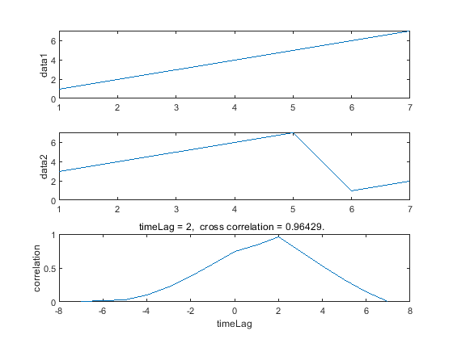
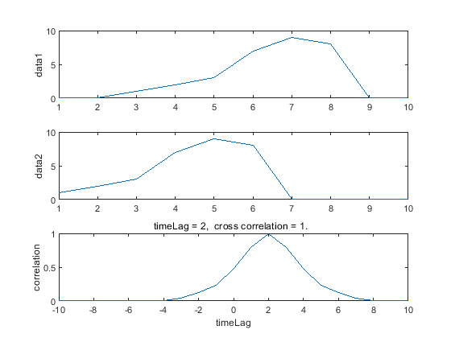
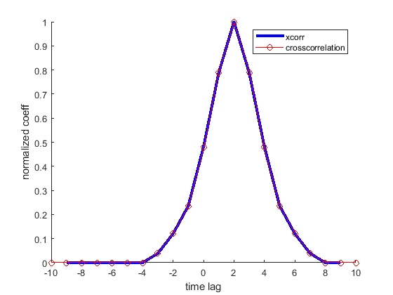
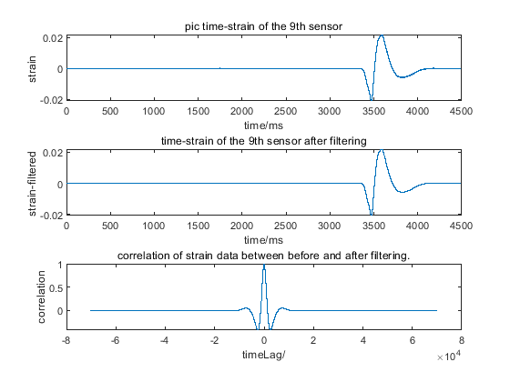
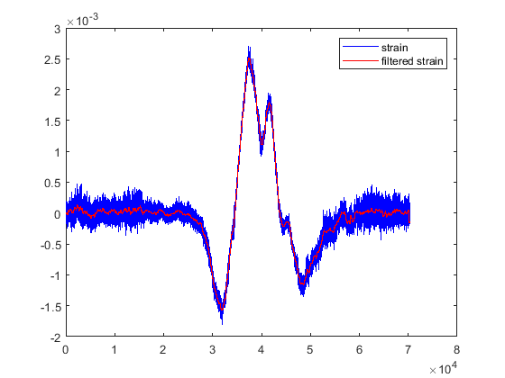

Contents
test crosscorrelation function
this is a demo of the crosscorrelation function
close all; % clear clc
DEBUG ! ! !
dbstop if error; format long addpath(genpath('../../../include')); % ----------------------------------------------------------------------------------------------------- % clear all; clc; close all;
# test 1
arr1 = [1 2 3 4 5 6 7]; arr2 = [3 4 5 6 7 1 2]; [xcorrArray1, timeLag1, fig1] = crosscorrelation(arr1, arr2);
# the cost of cross correlation is: 0.10485 s.
We can see the maximum correlation coefficient and the delay
disp(['maxCoor1 = ', num2str(max(xcorrArray1)), ', timeLag1 = ', num2str(timeLag1)]);
maxCoor1 = 0.96429, timeLag1 = 2
# test 2
x1 = [0,0,1,2,3,7,9,8,0,0]; x2 = [1,2,3,7,9,8,0,0,0,0]; [xcorrArray2, timeLag2, fig2] = crosscorrelation(x1, x2);
# the cost of cross correlation is: 0.08891 s.
the maximum correlation coefficient and the delay
disp(['maxCoor2 = ', num2str(max(xcorrArray2)), ', timeLag1 = ', num2str(timeLag2)]); xcorrTime = (1 : length(xcorrArray2)) - length(x1) - 1;
maxCoor2 = 1, timeLag1 = 2
Matlab call function xcorr
[xcorrMat, lag] = xcorr(x1, x2, 'coeff');
plot lag-corr graph.
figure; hold on; plot(lag, xcorrMat, 'b', 'linewidth', 3); plot(xcorrTime, xcorrArray2, 'ro-'); legend('xcorr', 'crosscorrelation'); xlabel('time lag'); ylabel('normalized coeff');
You can see two points ahead
# test 3
filename = '..\..\testdata\strainMat17.mat';
filename = '..\..\testdata\strainMat61.mat'; filename = '..\..\testdata\strainMat44.mat'; filename = '..\..\testdata\strainMat103.mat';
strainMat0 = importdata(filename); [lenPosition, lenTime] = size(strainMat0); time = (1:lenTime); % *0.064; [strainMat, timeLag2, maxCorr2, fig]= filteringfunc(strainMat0); n = lenPosition - 1; plot(axes(figure), time, strainMat0(n, :), 'b', time, strainMat(n, :), 'r'); legend('strain', 'filtered strain'); %{ 1.巴特沃斯滤波和卡尔曼滤波都可以，关键是高低截频的选取，这个要根据数据的情况选择合适的参数。滤波的意义在于使得PS波的初至更清晰被拾取到。 2.长短时窗法是经典的triggering方法，在微地震监测触发事件中使用， 一般根据PS波最长时差来选取，即长时窗最好不要同时包含PS波信息，比如常用参数60/20 ms，这样。 门槛值需要根据数据信噪比来测试一下，比如1.9 2.0.过低会放进来很多噪音信号，过高有些事件会漏掉。 3. 光纤的数据特点我还没有了解，不能回答这个。 4. 微地震主要用地下破裂事件的透射波来定位，反射波折射波基本都当噪音处理了， 体现在到时晚于透射波信号。拾取初至时只拾取最早到达的。 地层的倾角等变化信息基本体现在速度模型上，由于地震定位需要一个平衡的速度场来计算走时，所以层状速度模型要做平衡处理，不使用分段函数。 %} 